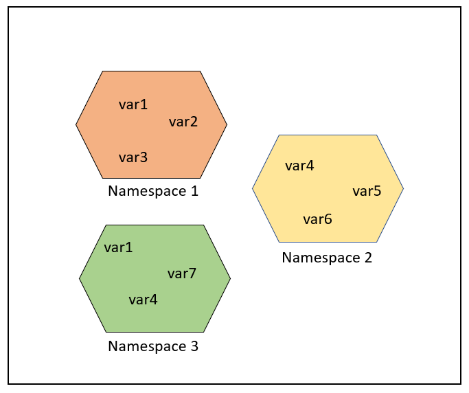
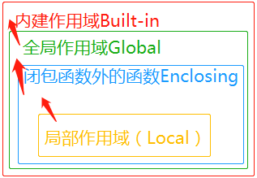

Python3 名前空間とスコープ
名前空間
まず公式ドキュメントの一節を見てみましょう：
A namespace is a mapping from names to objects.Most namespaces are currently implemented as Python dictionaries。
名前空間（Namespace）は名前からオブジェクトへのマッピングであり、ほとんどの名前空間はPythonの辞書を通じて実装されています。
名前空間は、プロジェクト内で名前の衝突を避ける方法を提供します。各名前空間は独立しており、何の関係もないため、1つの名前空間内では同名を重複できませんが、異なる名前空間では同名でも何の影響もありません。
コンピュータシステムの例を挙げると、1つのフォルダ（ディレクトリ）には複数のフォルダを含めることができ、各フォルダ内では同じファイル名を持つことはできませんが、異なるフォルダ内のファイルは同名でも構いません。

一般的に3つの名前空間があります：
- 組み込み名（built-in names）は、Python言語に組み込まれた名前で、例えば関数名 abs、char や例外名 BaseException、Exception などです。
- グローバル名（global names）は、モジュール内で定義された名前で、モジュールの変数を記録します。関数、クラス、その他のインポートされたモジュール、モジュールレベルの変数や定数を含みます。
- ローカル名（local names）は、関数内で定義された名前で、関数の変数を記録します。関数のパラメータやローカル定義の変数を含みます。（クラス内で定義されたものも同様です。）

名前空間の検索順序：
変数 サンプル を使いたいと仮定すると、Pythonの検索順序は次のとおりです：ローカル名前空間 -> グローバル名前空間 -> 組み込み名前空間。
変数 サンプル が見つからない場合、検索を放棄して NameError 例外を発生させます：
NameError: name 'サンプル' is not defined。
名前空間のライフサイクル：
名前空間のライフサイクルはオブジェクトのスコープに依存します。オブジェクトの実行が完了すると、その名前空間のライフサイクルは終了します。
したがって、外部の名前空間から内部の名前空間のオブジェクトにアクセスすることはできません。
例
var1 = 5
def some_func():
# var2 はローカル名
var2 = 6
def some_inner_func():
# var3 はネストされたローカル名
var3 = 7
下図のように、同じオブジェクト名が複数の名前空間に存在することができます。

スコープ
A scope is a textual region of a Python program where a namespace is directly accessible. "Directly accessible" here means that an unqualified reference to a name attempts to find the name in the namespace.
スコープとは、Pythonプログラムが名前空間に直接アクセスできる本文領域のことです。
Pythonプログラム内で変数に直接アクセスする場合、内側から外側へすべてのスコープを順に検索し、見つかるまで続けます。見つからなければ未定義のエラーになります。
Pythonでは、プログラムの変数はどこからでもアクセスできるわけではありません。アクセス権限は、その変数がどこで代入されたかによって決まります。
変数のスコープは、プログラムのどの部分でどの特定の変数名にアクセスできるかを決定します。
Pythonのスコープには全部で4種類あり、それぞれ次のとおりです：
4つのスコープがあります：
- L（Local）: 最も内側で、ローカル変数を含みます。例えば、関数/メソッド内部などです。
- E（Enclosing）: 非ローカル（non-local）かつ非グローバル（non-global）な変数を含みます。例えば、2つのネストした関数で、関数（またはクラス）A の中に関数 B が含まれている場合、B 内の名前にとって A 内のスコープは nonlocal となります。
- G（Global）: 現在のスクリプトの最も外側で、例えば現在のモジュールのグローバル変数です。
- B（Built-in）: 組み込みの変数/キーワードなどを含み、最後に検索されます。
LEGB ルール（Local, Enclosing, Global, Built-in）：Pythonが変数を検索するときの順序は次のとおりです：L –> E –> G –> B。
- Local: 現在の関数のローカルスコープ。
- Enclosing: 現在の関数を含む外部関数のスコープ（ネストした関数がある場合）。
- Global: 現在のモジュールのグローバルスコープ。
- Built-in: Pythonの組み込みスコープ。
ローカルで見つからない場合は、ローカルの外側のローカル（例：クロージャ）を探し、それでも見つからなければグローバルを探し、さらに組み込みの中を探します。

g_count = 0 # 全局作用域
def outer():
o_count = 1 # 闭包函数外的函数中
def inner():
i_count = 2 # 局部作用域
組み込みスコープは、builtin という名前の標準モジュールによって実装されています。しかし、この変数名自体は組み込みスコープ内に置かれていないため、このファイルをインポートしなければ使用できません。Python 3.0では、次のコードを使用して、実際にどの変数が定義済みかを確認できます：
>>> import builtins >>> dir(builtins)
Pythonでは、モジュール（module）、クラス（class）、関数（def、lambda）だけが新しいスコープを導入します。その他のコードブロック（if/elif/else、try/except、for/while など）は新しいスコープを導入しないため、これらの文の中で定義された変数は外部からもアクセスできます。次のコードのとおりです：
>>> if True: ... msg = 'I am from サンプル' ... >>> msg 'I am from サンプル' >>>
例では msg 変数は if 文ブロック内で定義されていますが、外部からもアクセスできます。
msg を関数内で定義した場合、それはローカル変数となり、外部からはアクセスできません：
>>> def test(): ... msg_inner = 'I am from サンプル' ... >>> msg_inner Traceback (most recent call last): File "<stdin>", line 1, in <module> NameError: name 'msg_inner' is not defined >>>
エラーメッセージから、msg_inner が未定義で使用できないことがわかります。これはローカル変数であり、関数内でのみ使用できるためです。
グローバル変数とローカル変数
関数内部で定義された変数はローカルスコープを持ち、関数の外部で定義された変数はグローバルスコープを持ちます。
ローカル変数は宣言された関数の内部でのみアクセスできますが、グローバル変数はプログラム全体でアクセスできます。
関数内部で宣言された変数は、関数内部のスコープでのみ有効です。関数を呼び出すと、これらの内部変数は関数内部のスコープに追加されますが、関数外部の同名の変数には影響しません。次の例のとおりです：
例（Python 3.0+）
上記の例の出力結果：
函数内是局部变量 : 30 函数外是全局变量 : 0
1. グローバル変数: 関数の外部で定義された変数で、ファイル全体からアクセスできます。関数の外部で定義された変数は、関数内部で同名のローカル変数が定義されていない限り、すべての関数から見えます。
例
def my_function():
print(x) # グローバル変数 x にアクセスできる
my_function() # 10 を出力
2. ローカル変数: 関数内部で定義された変数で、関数内でのみ有効であり、関数外からはアクセスできません。ローカル変数はグローバル変数より優先されるため、ローカル変数とグローバル変数が同名の場合、関数内部ではローカル変数が使用されます。
例
x = 5 # ローカル変数
print(x) # ローカル変数 x にアクセス
my_function() # 5 を出力
print(x) # エラー: NameError: name 'x' is not defined
global と nonlocal キーワード
内部スコープで外部スコープの変数を変更したい場合は、global と nonlocal キーワードを使う必要があります。
次の例ではグローバル変数 num を変更します：
例（Python 3.0+）
上記の例の出力結果：
1 123 123
ネストしたスコープ（enclosing スコープ、外側の非グローバルスコープ）内の変数を変更する場合は、nonlocal キーワードが必要です。次の例のとおりです：
例（Python 3.0+）
上記の例の出力結果：
100 100
もう1つ特別なケースがあります。次のコードが実行されたと仮定します：
例（Python 3.0+）
上記のプログラムを実行すると、次のエラーメッセージが表示されます：
Traceback (most recent call last):
File "test.py", line 7, in <module>
test()
File "test.py", line 5, in test
a = a + 1
UnboundLocalError: local variable 'a' referenced before assignment
エラーメッセージはローカルスコープ参照エラーです。test 関数内の a はローカルとして使用されており、未定義のため変更できないからです。
a をグローバル変数に変更する：
例
実行出力結果：
関数のパラメータを介して渡すこともできます：
例（Python 3.0+）
実行出力結果：
まとめ
- グローバル変数関数の外部で定義され、ファイル全体からアクセスできます。
- ローカル変数関数の内部で定義され、関数内でのみアクセスできます。
- 使用
global関数内でグローバル変数を変更できます。 - 使用
nonlocalネストした関数内で外部関数の変数を変更できます。